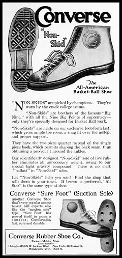

Converse Chucks

In 1917, the company designed the forerunner of the modern All Star, marketed under the name "Non-Skids." The shoe was composed of a rubber sole and canvas upper and was designed to be a high performance athletic shoe for basketball players.
In 1923, American basketball player Charles "Chuck" Taylor joined a basketball team sponsored by the Converse Company called The Converse All Stars. Taylor held basketball clinics in high schools all over the country and while teaching the fundamentals of the game, he sold the All Star shoes.[2] As a salesman and athlete for the company, Taylor also made improvements to the shoe he loved. His ideas for the shoe were designed to provide enhanced flexibility and support and also incorporated a patch to protect the ankle.
A variety of professional basketball players soon wore All Stars and they became the envy of all aspiring basketball players. Soon after, All Stars were being worn by athletes in the Olympics, and during World War II American soldiers began to wear All Stars while in training.